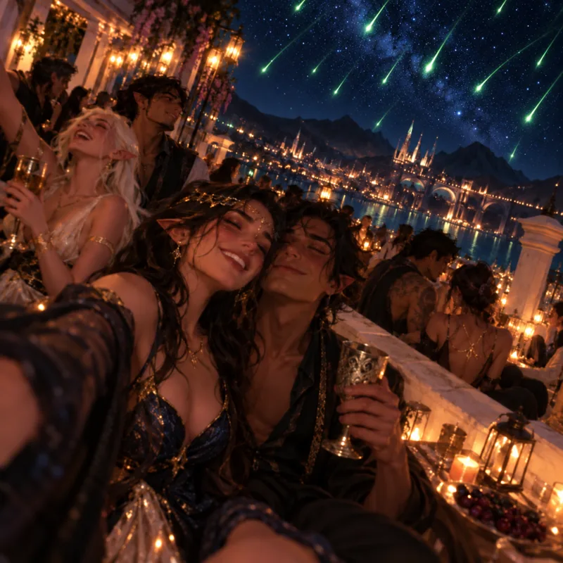
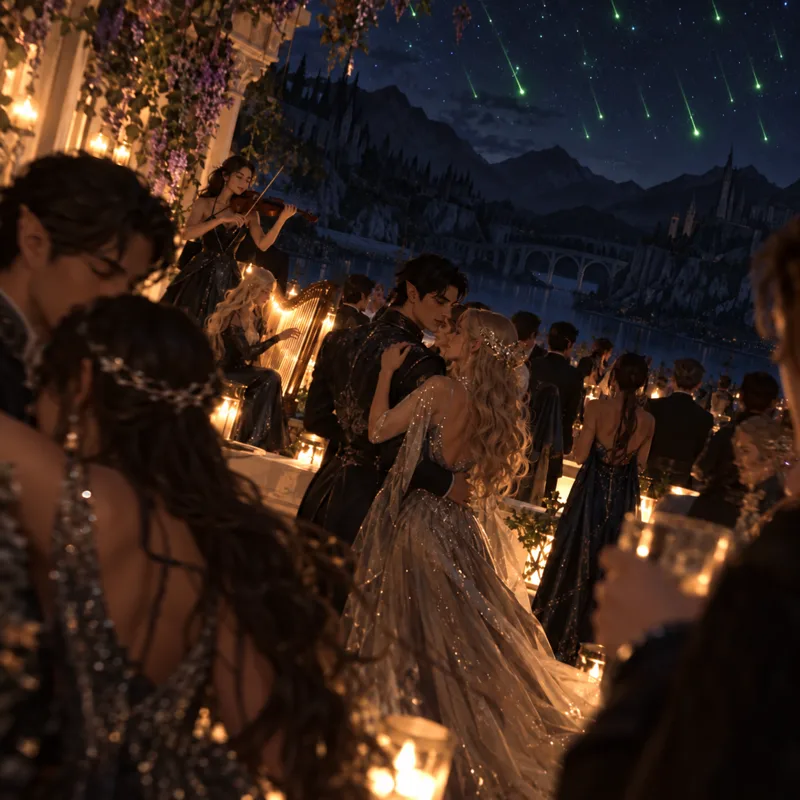

Starfall is a night of magic and romance. On this one night, Velaris puts out its lights. The whole city climbs to its rooftops and balconies and waits in the dark, until the first star breaks loose from the sky.
Once a year, in the Night Court. Velaris is the place to be: the city dims every light so the sky can be seen, and the best views are from the rooftops and the banks of the Sidra.
As night falls, the city puts out its lights so nothing outshines the sky. Friends and families gather on rooftops, terraces and balconies to watch together, dressed in their finest.
The stars that sweep across the sky are not stars at all, but spirits of light that pass over the city once a year. The celebrations carry on long after the last light has passed.
Keep your lights low; the city goes dark on purpose.
Watch, don't chase. The lights are spirits, not stars.
